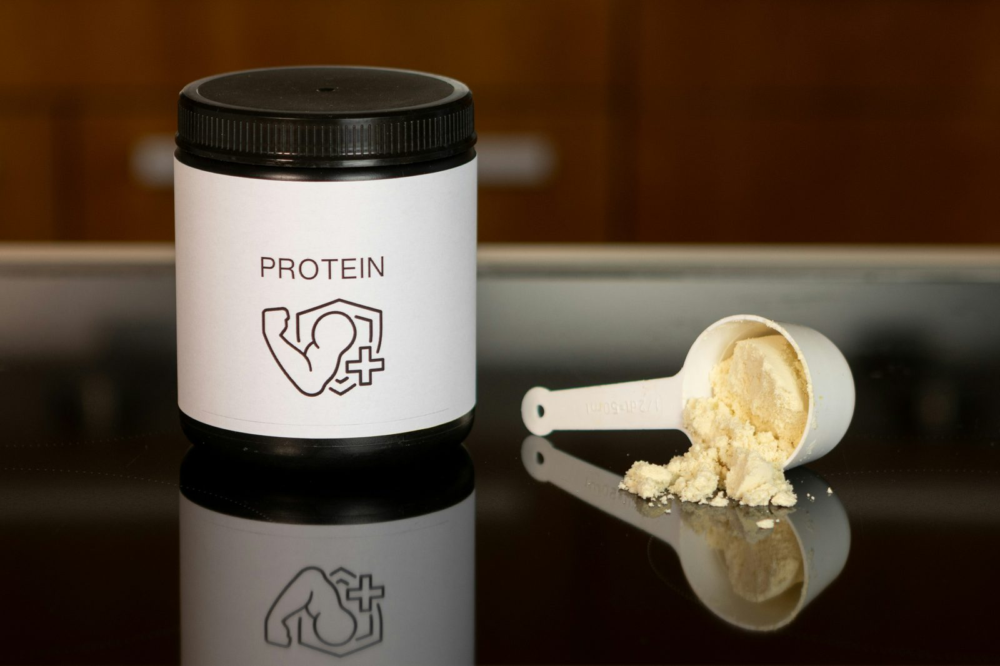

Bodybuilding forums have argued this one for decades, and the vegan/vegetarian movement has only intensified it: does protein source actually matter, or is total protein intake the only thing that counts? The honest answer sits in between — source matters less than people assume, but not zero, and the details are worth understanding rather than picking a side on principle alone.
Complete vs incomplete proteins
Animal proteins (meat, fish, eggs, dairy) are "complete" by default — they contain all nine essential amino acids in reasonably sufficient amounts. Most individual plant proteins are lower in one or more essential amino acids (commonly lysine in grains, methionine in legumes), earning the "incomplete" label. This sounds like a decisive advantage for animal protein, but the practical impact is smaller than the terminology implies.
Why "incomplete" doesn't mean inadequate
The amino acid gap in any single plant food is easily closed by eating a variety of plant proteins across the day — grains, legumes, nuts, and seeds have complementary amino acid profiles, and your body maintains an amino acid pool it draws from across meals, not just the one you just ate. You do not need to deliberately combine specific foods in the same meal (the old "rice and beans in one sitting" rule) — eating a reasonably varied plant-based diet across the day provides the same complete amino acid coverage.
Leucine and muscle protein synthesis
Leucine is the specific amino acid that most directly triggers muscle protein synthesis, and animal proteins generally contain more of it per gram than most plant proteins (soy being a notable exception, with a leucine content closer to animal sources). This gives animal protein a modest per-gram edge for muscle building — but the difference is easily offset by eating a somewhat larger total quantity of plant protein, which most plant-based eaters do naturally given the lower protein density of many plant foods.
Total protein intake matters more than source
Research comparing plant-based and animal-based diets at matched total protein intake generally finds similar muscle growth outcomes, reinforcing that total daily protein — not the specific source — is the primary driver of results. Where plant-based diets more often fall short is in reaching a sufficiently high total protein intake in the first place, since many whole plant foods are less protein-dense by volume than meat, fish, or eggs, requiring more deliberate planning to hit the same gram target.
Health outcomes beyond muscle building
This is where the comparison shifts. Diets higher in plant protein sources are consistently associated with lower cardiovascular disease risk in population studies, likely due to the accompanying fibre, lower saturated fat, and different micronutrient profile that comes with whole plant foods, rather than the protein itself being inherently protective. Diets very heavy in processed red and cured meats specifically are linked to higher health risks, though unprocessed lean animal protein doesn't carry the same association. The health difference has more to do with overall dietary pattern than a simple animal-versus-plant protein label.
Practical considerations for each approach
Animal protein sources are generally more protein-dense per calorie and easier to hit a high protein target with fewer total calories — useful during a cut. Plant protein sources typically come with more fibre and volume per gram of protein, which can support satiety but requires eating more total food (and more planning) to reach equivalent protein targets, particularly for people with high protein needs like serious strength athletes.
Which should you choose?
If you eat both animal and plant foods, there's no compelling reason to exclude either for muscle-building or health purposes — total protein and a reasonably varied diet matter more than strict sourcing. If you're plant-based by choice or necessity, the achievable path is the same as anyone else's: hit your total daily protein target through a variety of sources (legumes, tofu, tempeh, seitan, whole grains, nuts), and don't worry about combining specific foods in the same meal.
Frequently asked questions
Can you build muscle on a plant-based diet alone?
Yes — as long as total protein intake and amino acid variety are adequate, muscle building works the same way regardless of protein source.
Do I need to combine plant proteins to get complete amino acids?
Not within a single meal — eating a variety of plant proteins across the day provides all essential amino acids without needing to combine specific foods together.
Is animal protein always more effective for muscle growth?
Per gram, animal protein has a slight edge due to higher leucine content, but this difference becomes minor when total daily protein intake is sufficient.
Which is healthier long-term, plant or animal protein?
Research suggests diets with more plant protein sources are associated with lower cardiovascular risk, though this depends heavily on overall diet quality rather than protein source alone.